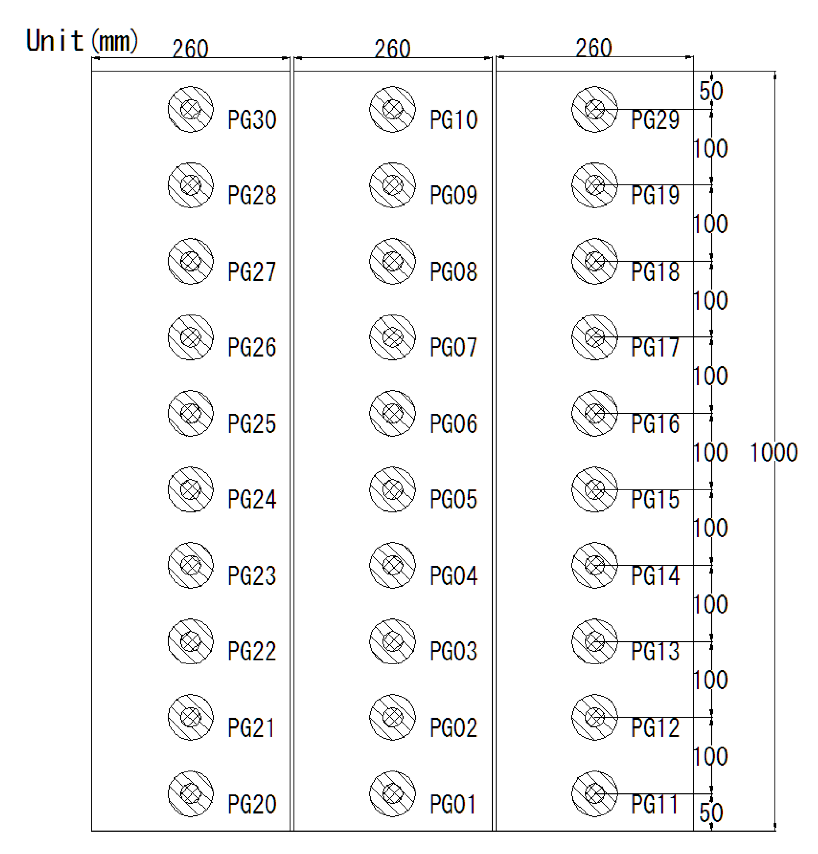

課題３ 防潮壁に作用する孤立波の波圧
概要
有川(2015)による防潮壁に作用する孤立波の波圧を対象とした水理模型実験の再現計算を行い，孤立波の浅水変形，砕波，最大重複波圧，衝撃段波波圧の再現性を検証する．
内容
巨大津波に対する防護の一つとして，直立型の海岸堤防がある．このような直立堤に対する津波の波力は，古くから検討されており，近年では大規模な試験も行われている．しかし，その波力特性については，いまだ不明瞭な点が多い．特に，孤立波のような周期の短いものに対しては，系統立てた実験がない．そこで有川(2015)は，孤立波に対する波力試験を行い，その特性について検討を行った．本課題ではこの水理模型実験の再現計算を行う．
実験方法および実験条件を以下に示す．水槽は，港湾空港技術研究所の所有する105m造波水路（長さ105m，幅2.5m，深さ2.0m）を用いて行った．水路幅は途中で二つに区切られており，斜面を設置した水路幅は0.78mとなる．地形は，海域では一様斜面勾配を，陸域では水平床とし，一様斜面勾配は，0，1/10，1/20，1/40の4種類とした．地形断面図と波高計，流速計および構造物の設置位置を図-1に示す．
壁体模型は，高さ1.0m，幅0.26mの直立壁の模型を陸域に並べて設置した．それぞれの正面の中央部に，10cm刻みで波圧計を設置した．その場所を図-2に示す．
孤立波は，波高3ケース（沖側（Wg1の位置）の波高約0.2m，0.15m，0.075m），水深2ケース（陸地高さをゼロとして0.0m，-0.05m）とした．直立壁の位置は，海岸線から0.0m，1.25m，2.5mの3ケースとした．ばらつきを考えて各ケース15回行った．
実験データのサンプリング周波数は2000Hzである．
比較方法
事前準備用の実験データとしては，一部の実験ケースが津波防災研究ポータルサイトのベンチマーク問題「水理模型実験による防潮壁に作用する孤立波の波圧特性に関する検討」で公開されており，計算モデルの精度を確認することができる．公開されている実験ケースは，海底地形：斜面勾配0，直立壁の位置：0.0m，1.25m，1.5mの3種類，水深：0.0m，孤立波の波高：0.2mである．
ハッカソンでは表-1に示すように，海底地形：斜面勾配1/10，直立壁の位置：0.0m，水深：-0.025m（論文中には記載していない条件），孤立波の波高：0.2mの実験ケースを対象とし， 以下の地点における水位、流速および波圧の時系列を比較する．
- WG3，5，6，7における水位の時系列
- V2，3における流速の時系列
- PG1，2，3，4，8における波圧の時系列
事前公開データ（使用申込はこちら）
表-1の実験ケースにおけるWg1での水面変位の時系列波形（図-3）
参考文献
有川太郎，水理模型実験による防潮壁に作用する孤立波の波圧特性に関する検討，土木学会論文集B2（海岸工学），Vol. 71，No. 2，I_889-I_894，2015，https://doi.org/10.2208/kaigan.71.I_889．
お問い合わせ
課題に関する質問などはこちら．
計算チームの参加申込はこちら．
図表
図-1 地形断面図と波高計(Wg)，流速計(V)および構造物の設置位置
（上から斜面勾配0，1/10，1/20，1/40）

図-2 壁体模型と波圧計設置位置
表-1 実験ケース
| 海底地形 | 斜面勾配1/10 |
| 直立壁の位置 | 海岸線から0.0m |
| 水深 | 陸地高さに対して-0.025m |
| 孤立波の波高 | 沖側(Wg1)で0.2m |

図-3 表-1の実験ケースにおけるWg1での水面変位の時系列波形